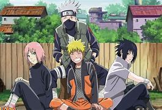

Personagens principais
Os personagens principais de Naruto Shippuden e a amizade entre eles são aspectos centrais da série. Aqui está um resumo sobre a amizade dos quatro personagens principais:
Naruto Uzumaki: O protagonista da série, um jovem ninja com um espírito indomável e um coração bondoso. Apesar de ser rejeitado pela vila por ter a Raposa de Nove Caudas selada dentro dele, Naruto sonha em se tornar o Hokage para ganhar o respeito e o amor da vila. Sua amizade com Sasuke é complexa, marcada por rivalidade e um profundo laço fraternal1.
Sasuke Uchiha: O melhor amigo e rival de Naruto, Sasuke é movido por um desejo de vingança contra seu irmão Itachi, que massacrou todo o seu clã. A amizade entre Naruto e Sasuke é testada várias vezes, mas também mostra momentos de compreensão e apoio mútuo1.
Sakura Haruno: Companheira de equipe de Naruto e Sasuke, Sakura começa a série apaixonada por Sasuke e desdenhosa de Naruto. No entanto, ao longo da série, ela desenvolve uma amizade profunda e respeitosa com ambos, especialmente após amadurecer e se tornar uma ninja médica habilidosa.
Kakashi Hatake: O mentor e líder do Time 7, composto por Naruto, Sasuke e Sakura. Kakashi ensina lições valiosas sobre trabalho em equipe e sacrifício. Ele tem um passado trágico próprio, mas usa sua experiência para guiar seus alunos e formar um vínculo estreito com eles1. Esses quatro personagens formam o núcleo do Time 7 e suas interações e amizades são um dos pilares emocionais da série. Eles enfrentam muitos desafios juntos, e suas amizades são testadas, mas no final, esses laços se mostram inquebráveis e fundamentais para o crescimento de cada um.
.jpg)